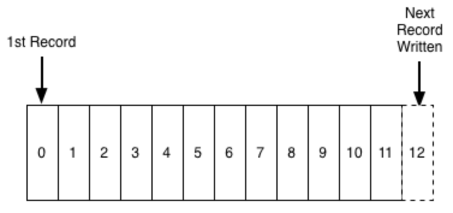
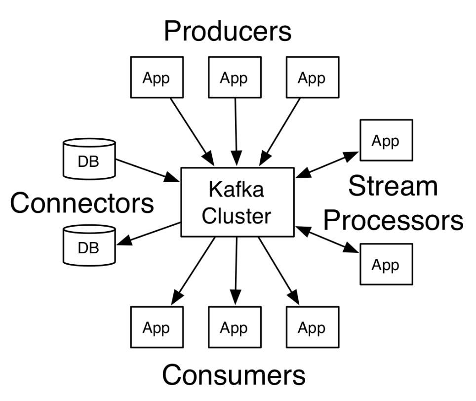
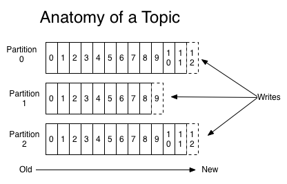
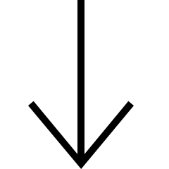
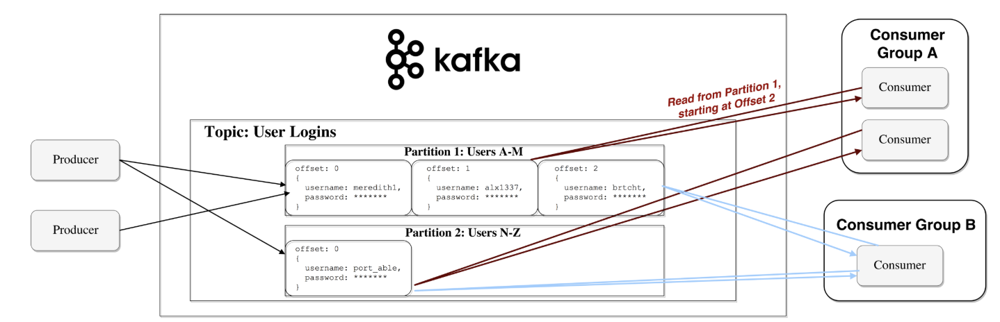
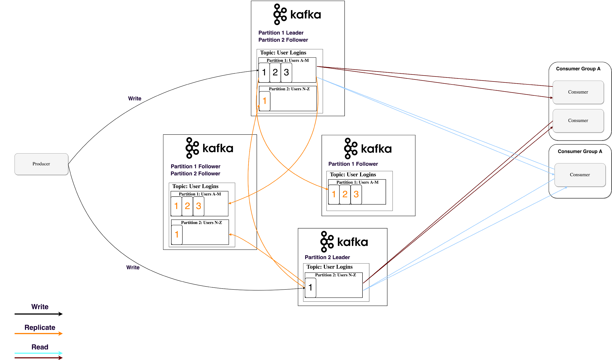
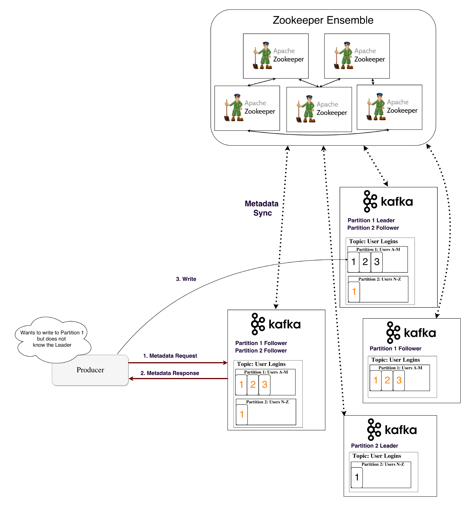

Introduction & Atmosphere
code.cis.uafs.edu/cloud101
VM Username: admin - Password: UApass50

Background
Kafka was originally developed at LinkedIn in 2011 and has improved a lot since then. Nowadays it is a whole platform, allowing you to redundantly store large amounts of data, have a message bus with huge throughput (millions/sec) and use real-time stream processing on the data that goes through it all at once.
Named after author Franz Kafka because it is "a system optimized for writing", stripped down to its core, Kafka is a distributed, horizontally-scalable, fault-tolerant, commit log.
Distributed
A distributed system is one which is split into multiple running machines, all of which work together in a cluster to appear as one single node to the end user. Kafka is distributed in the sense that it stores, receives and sends messages on different nodes (called brokers).
The benefits to this approach are high scalability and fault-tolerance.


Horizontally-scalable
Let's say you have a traditional database server which is starting to get overloaded. One way to get this solved is to simply increase the resources (CPU, RAM, SSD) on the server. This is called vertical scaling — where you add more resources to the machine. There are two big disadvantages to scaling upwards. There are limits defined by the hardware. You cannot scale upwards indefinitely. And secondly, it usually requires downtime, something which big corporations cannot afford.
Horizontal scalability is what Kafka uses, it solves the same problem by throwing more machines at it. Adding a new machine does not require downtime nor are there any limits to the amount of machines you can have in your cluster. The catch is that not all systems support horizontal scalability, as they are not designed to work in a cluster and those that are are usually more complex to work with.
Fault-tolerant
Something that emerges in non-distributed systems is that they have a single point of failure (SPoF). If your single database server fails (as machines do) for whatever reason, you've lost whatever you were working on.
Distributed systems are designed in such a way to accommodate failures in a configurable way. In a 5-node Kafka cluster, you can have it continue working even if 2 of the nodes are down. It is worth noting that fault-tolerance is at a direct tradeoff with performance, as in the more fault-tolerant your system is, the less performant it is.


Commit Log
A commit log (also referred to as write-ahead log, transaction log) is a persistent ordered data structure which only supports appends. You cannot modify nor delete records from it. It is read from left to right and guarantees item ordering.
Kafka stores all of its messages to disk and having them ordered in the structure lets it take advantage of sequential disk reads. Reads and writes are a constant time O(1) (knowing the record ID), which compared to other structure’s O(log N) operations on disk is a huge advantage, as each disk seek is expensive.
How Does it Work & Technical Overview
Structure
Applications (producers) send messages (records) to a Kafka node / cluster (broker) and said messages are processed by other applications called consumers. Said messages get stored in a topic and consumers can subscribe to a topic to receive updates and new information.
Producers can be any kind of app that is creating or listening for some sort of data, new log lines, sensor data, activity tracking, etc. There's the ones responsibe for pushing data into your Kafka cluster.
Kafka servers store all incoming messages from publushers for some period of time, and publishes them to a stream of data called a topic.
Kafka consumers subscribe to one or more topics and recieve data as it's published.
A stream / topic can have many different consumers, all with their own position in the stream maintained.
As topics can get large depending on the amount of distinct data being stored, Kafka will split them into partitions of a smaller size for better performance and scalability. For example, say you were storing user login requests, you could split them by the first character of the user’s username. Then store them in the same way a stack handles data.
In order to avoid two processes reading the same message twice, each partition is tied to only one consumer process per group.
Kafka follows the principle of a dumb broker and smart consumer. This means that Kafka does not keep track of what records are read by the consumer and delete them but rather stores them a set amount of time (e.g one day) or until some size threshold is met. Consumers themselves poll Kafka for new messages and say what records they want to read. Allowing consumers to pick up where they left off and thus being able to replay and reprocess events.
Streaming
We already know a lot about processing data that's on a database, but this assumes that the data is already loaded onto the system. We can take for granted that our data had to come from somewhere and it's not always the best option to have to load all of our data first and then have to process it in big chunks. That's where Kafka comes in, you're able to process data as it's received and store it into your cluster or store it into a database like HDFS or HBase.
There are many applications of this, you might be monitoring customer behavior data coming from the logs on a web server and transforming those logs into database entries. Stream Processors allow you to transform data as it comes in, transform or restructure the data however needed, then republish to a new topic or store it in a database.
Persistence to Disk
Kafka actually stores all of its records to disk and does not keep anything in RAM. There are numerous optimizations behind this that make this feasible:
Kafka has a protocol which groups messages together. This allows network requests to group messages together and reduce network overhead, the server in turn persist chunk of messages in one go and consumer fetch large linear chunks at once
Linear reads/writes on a disk are fast. The concept that modern disks are slow is because of numerous disk seeks, something that is not an issue in big linear operations.
Said linear operations are heavily optimized by the OS, via read-ahead (prefetch large block multiples) and write-behind (group small logical writes into big physical writes) techniques.
Modern OSes cache the disk in free RAM. This is called pagecache.
Data Replication
At all times, one broker “owns” a partition and is the node through which applications write/read from the partition. This is called a partition leader. It replicates the data it receives to N other brokers, called followers. They store the data as well and are ready to be elected as leader in case the leader node dies.

In order for this system to work, the nodes have to know who the leaders are at any given point. This is a form of metadata handled by Zookeeper.
What is Zookeeper?
Zookeeper is a distributed key-value store. It is highly-optimized for reads but writes are slower. It is most commonly used to store metadata and handle the mechanics of clustering (heartbeats, distributing updates/configurations, etc).
It allows clients of the service (the Kafka brokers) to subscribe and have changes sent to them once they happen. This is how brokers know when to switch partition leaders. Zookeeper is also extremely fault-tolerant. In this case it's sending info on partition leaders and their health.
Producer and Consumers used to directly connect and talk to Zookeeper to get this (and other) information. Kafka has been moving away from this coupling and since versions 0.8 and 0.9 respectively, clients fetch metadata information from Kafka brokers directly, who themselves talk to Zookeeper.
Use Cases & Testimonies

Apache Kafka is used at LinkedIn for activity stream data and operational metrics. This powers various products like LinkedIn Newsfeed, LinkedIn Today in addition to offline analytics systems like Hadoop. There are also newer use cases like replacing MySQL replication with Kafka.
Netflix
Real-time monitoring and event-processing pipeline, used in their implementation of Suro. Based on a dynamically configurable routing rule, Suro dispatches log events to a designated Kafka cluster under a mapped topic.
Spotify
Spotify uses Kafka as a central component for their log delivery system. It sends all the data produced by hosts into a Hadoop cluster for later processing. By adopting Kafka as part of their pipeline they were able to reduce the average time needed to transfer logs from 4 hours to 10 seconds.
Messaging
In a point-to-point system, messages are persisted in a queue. One or more consumers can consume the messages in the queue, but a particular message can be consumed by a maximum of one consumer only. Once a consumer reads a message in the queue, it disappears from that queue. The typical example of this system is an Order Processing System, where each order will be processed by one Order Processor, but Multiple Order Processors can work as well at the same time. The following diagram depicts the structure.
In the publish-subscribe system, messages are persisted in a topic. Unlike point-to-point system, consumers can subscribe to one or more topic and consume all the messages in that topic. In the Publish-Subscribe system, message producers are called publishers and message consumers are called subscribers. A real-life example is Dish TV, which publishes different channels like sports, movies, music, etc., and anyone can subscribe to their own set of channels and get them whenever their subscribed channels are available.
Website Activity Tracking
The original use case for Kafka was to be able to rebuild a user activity tracking pipeline as a set of real-time publish-subscribe feeds. This means site activity (page views, searches, or other actions users may take) is published to central topics with one topic per activity type. These feeds are available for subscription for a range of use cases including real-time processing, real-time monitoring, and loading into Hadoop or offline data warehousing systems for offline processing and reporting.
Activity tracking is often very high volume as many activity messages are generated for each user page view.
Log Aggregation
Many people use Kafka as a replacement for a log aggregation solution. Log aggregation typically collects physical log files off servers and puts them in a central place (a file server or HDFS perhaps) for processing. Kafka abstracts away the details of files and gives a cleaner abstraction of log or event data as a stream of messages. This allows for lower-latency processing and easier support for multiple data sources and distributed data consumption. In comparison to log-centric systems like Scribe or Flume, Kafka offers equally good performance, stronger durability guarantees due to replication, and much lower end-to-end latency.
Event Sourcing
Event sourcing is a style of application design where state changes are logged as a time-ordered sequence of records. Kafka's support for very large stored log data makes it an excellent backend for an application built in this style.
Tutorial
Kafka
The virtual machine provided in this demonstration has Kafka and Zookeeper preinstalled. The files for Kafka and Zookeeper reside in the /apache folder. It takes little effort to install each service and run the standalone version of Kafka or Zookeeper.
To run Zookeeper alongside Tomcat, it's necessary to add the line admin.serverPort=8081
to our default zoo.cfg file. It's also necessary to add our hostname to the
/etc/hosts file, so that Kafka may know the address of the local host.
Like most software maintained by Apache, Kafka and Zookeeper come with scripts that perform basic tasks. In the code below, the first command will start an instance of Zookeeper. The second command will start Kafka.
zkServer.sh start
kafka-server-start.sh $KAFKA_HOME/config/server.properties
Now that we've started Kafka and Zookeeper, it's possible to create a topic. The command bellow will create a topic named data on our standalone instance of Kafka. The data will not be replicted to other hosts, and the topic will not be sliced into partitions.
kafka-topics.sh --create --bootstrap-server localhost:9092 --replication-factor 1 --partitions 1 --topic data
To get the benefits of replication or topic partitioning, we need to add more brokers to our system. First, we need to create configuration files for each broker. Enter cd $KAFKA_HOME/config to find the Kafa configuration files, then type cp server.properties server-1.properties to create a copy of an existing configuration file. In each new file, make a distinct broker.id, listeners, and log.dirs for each broker.
Once we've created configuration files for our brokers, we need to start each one. Use kafka-server-start.sh $KAFKA_HOME/config/ for each configuration file. We used the same process earlier
to start our first node.
Now that we have multiple brokers, we can create a topic with a replication factor greater than one. Use the second command below to see the role of each broker on the topic.
kafka-topics.sh --create --bootstrap-server localhost:9092 --replication-factor 3 --partitions 1 --topic replicated-data
kafka-topics.sh --describe --bootstrap-server localhost:9092 --topic replicated-data
Spring Boot
This project uses Spring Boot to allow a web interface to communicate with Apache Kafka. Spring is an application framework written in Java, but Spring Boot is a preconfigured version of the Spring platform.
With Spring Boot, it's possible to create stand-alone applications that may run an embeded Tomcat server. It provides a starter POM, which makes it easy to manage software dependencies through Maven. Spring Boot supports a model view controller (MVC) architecture, and you'll see this paradigm in the files written for this demonstration.
It's beneficial to create a consumer, producer, and topic configuration classes for the topic we're using. This application already has configuration classes for the Data class in the config/data folder. The classes in this project have been configured to write json data.
But, we'll create a configuration file to orchestrate the websocket traffic between our web client and Kafka. Open the file config/WebSocketConfig.java and add the following code. The first method creates mappings we can use to send or receive data. The second method creates an endpoint that our websocket will listen to.
@Override
public void configureMessageBroker(MessageBrokerRegistry config) {
config.enableSimpleBroker("/receive");
config.setApplicationDestinationPrefixes("/send");
}
@Override
public void registerStompEndpoints(StompEndpointRegistry registry) {
registry.addEndpoint("/websocket-traffic").withSockJS();
}
Next, we'll learn how to use controllers and services to connect Kafka to a website.
Navigate to the /controller/data folder. Open the DataWebSocketController class, and add the code shown below. This creates a mapping to the address /send/websocket-data. Activity at this address will cause a Kafka producer to write data to a preconfigured topic.
We don't need Kafka to relay messages through a websocket. We can always use @SendTo() to relay data to another address. But, Kafka provides a pipeline that multiple services can read from. If multiple services need to use data sent through a websocket, then it would be good to use Kafka to manage the data.
@Autowired
private DataProducerService producer;
@MessageMapping("/websocket-data")
public void messageSocketResponse(WebSocketTestSend message) throws Exception {
this.producer.produceData(new Data(HtmlUtils.htmlEscape(message.getMessage()),message.getValue()));
}
We've set up the controller, and now we'll create a service that the producer will use to append data to a Kafka topic. Locate the DataProducerService.java file in the /service/data directory. Insert the code below into the class.
@Value("${app.topic.data}")
private String topic;
@Autowired
private KafkaTemplate template;
public void produceData(Data data){
Message message = MessageBuilder.withPayload(data).setHeader(KafkaHeaders.TOPIC, topic).build();
template.send(message);
}
Our application can produce data to a preconfigured topic. But,
we still need to create a service to consume topic updates. Add the following code to the DataConsumerService class. The KafkaListener will run the receive method when our topic receives an update. In our application, it pushes updates to a websocket endpoint.
@Autowired
private SimpMessagingTemplate template;
@KafkaListener(topics = "${app.topic.data}")
public void receive(@Payload Data data, @Headers MessageHeaders headers) {
template.convertAndSend("/receive/websocket-data", data);
}
We've completed the steps needed to allow a Spring Boot application to communicate with Kafka. Now, we need to write the Javascript code that the website will use to transmit data. Navigate to the kafka-spring-final/src/main/resources/ directory and open app.js . Find the socketConnect() method and add the code below. This code will allow the website to create a connection to the address we defined in our controller. Once we're connected, it will subscribe to the KafkaListener we created.
var socket = new SockJS('/websocket-traffic');
stompClient = Stomp.over(socket);
stompClient.connect({}, function (frame) {
$("#connect-button").prop('disabled', true);
stompClient.subscribe('/receive/websocket-data', function (data) {
showData(JSON.parse(data.body).value,JSON.parse(data.body).content);
});
});
The website can subscribe to topic updates, but it still needs the ability to transmit updates. Add the following code to the sendSocketMessage() method in the app.js file. With this code, the website will send JSON formatted data to the address we defined in our DataWebSocketController class.
stompClient.send("/send/websocket-data", {}, JSON.stringify({'value': $("#socket-value-input").val(),'message': $("#socket-content-input").val()}));